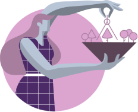

This couple really takes responsibility in relationships and, as they
can count on each other, they have room to relax. This romantic match
not only shares burdens and chores equally, but they also feel that
they can count on each other since they are steadfast, loyal, and
faithful to each other.

Possible Conflicts and Differences of Opinion:
What could be the potential clashes in their
relationship? During stressful situations, Reformers generally
become more critical of everyone, including themselves and their
partner. As they are a clear example of “just responsibilities,
no fun”, it gets difficult to be around them even in the average
levels. Type 1s might feel that type 6s aren’t trying enough,
aren’t serious enough, or aren’t mature or meticulous enough. At
least not as much as Ones are, which can often lead to
accusations and resentment.
As Reformers get more and
more stressed, their partner gets more and more emotionally
reactive, insecure, and worried. What Loyalists sees instead is
a partner that is critical, and rejecting, which can make them
feel even more insecure and anxious. This can lead to Loyalists
questioning the future of the relationship or feeling that it
isn’t meant to be. If tensions continue, type 6s will get
increasingly defensive and evasive; they will also tend to work
longer hours than they used to in order to stay away from home
and avoid spending time with their partners.
They
start getting absent or doing just the bare minimum. They will
also find it difficult to talk directly about their feelings and
fears. As a result, there will be little to no communication
between them. In this scenario, they can get even more
inconsistent and unreliable for their partners and these
reactions can fuel type 1’s disappointment, frustration and
resentment. In the worst-case scenario, Reformers may find
Loyalists’ anxiety and defensiveness quite frustrating and might
get angry, cold and critical towards them. Anger, resentment,
and accusations can be part of the picture as the relationship
deteriorates.
Enneagram Type 1 In A Relationship With Type 7
How Does Each Enneagram Type Enhance the Relationship?
How high is the compatibility between Enneagram type 1 and 7?
Enneagram type 1s (Reformers) and Enneagram type 7 (Enthusiasts)
can easily achieve a complementary and reciprocal relationship.
They are kind of opposite poles that can either provide
something their partner lacks, helping both of them to achieve a
new level of growth or, in the worst-case scenario, drive each
other apart by playing around with each other’s weaknesses.
29
Enneagram 1 in Relationships